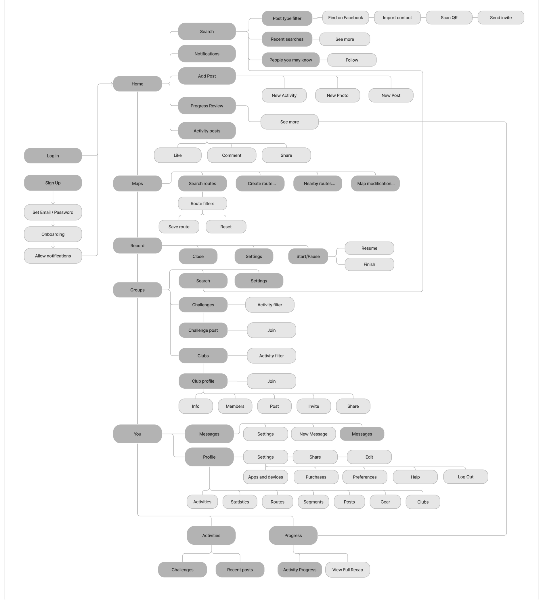
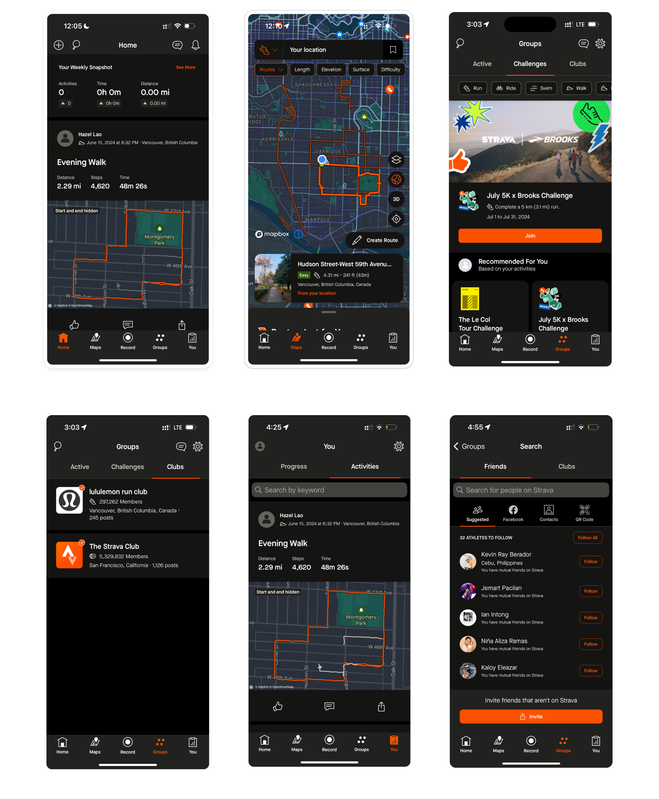
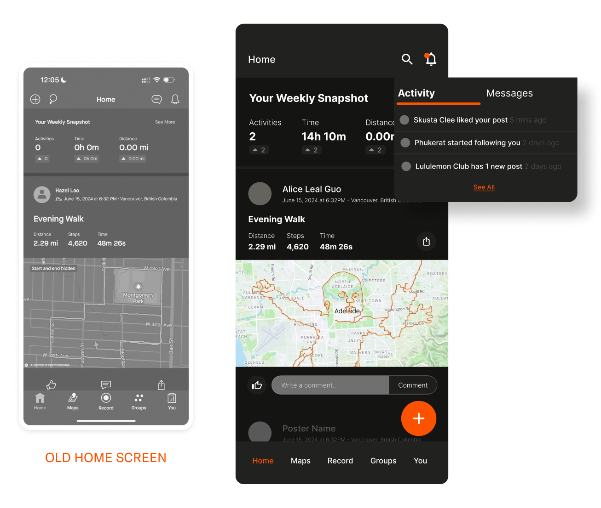
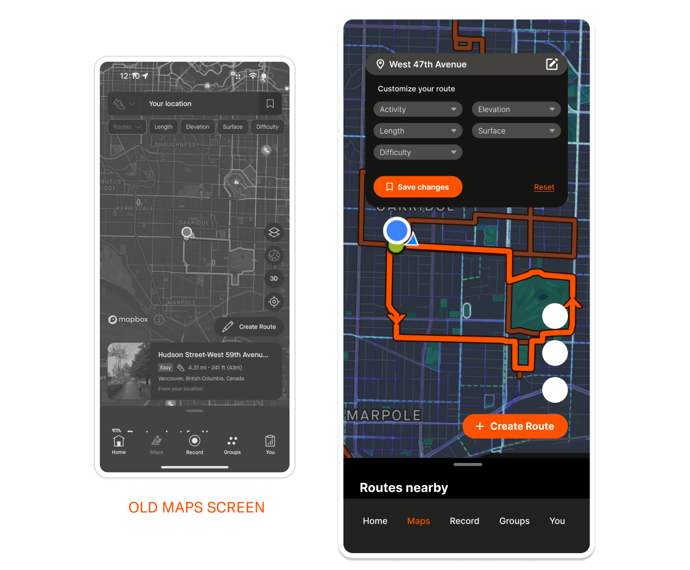
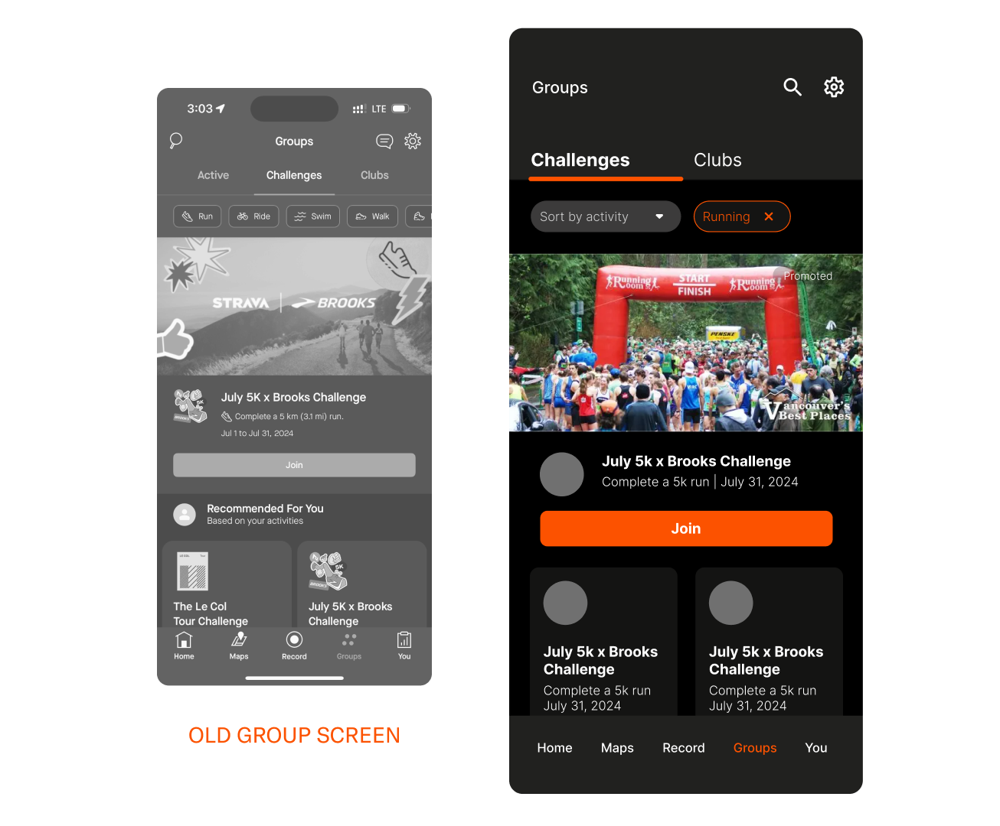
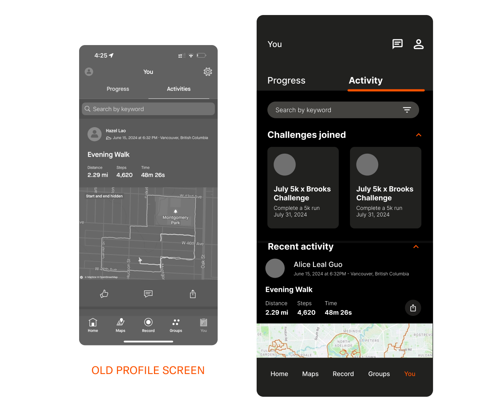
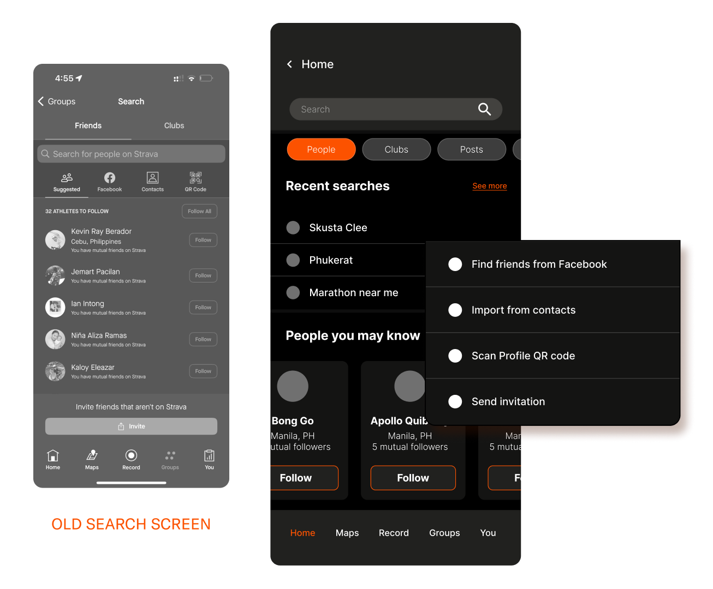

About the app
Strava is an app for tracking physical exercise which also incorporates social network features.
Main Features:
Track and analyze activities: Strava syncs with most devices - your phone, GPS watch or head unit, heart rate monitor or power meter - and records just about any performance metric you can imagine, plus a few exclusive to Strava.
Connect with friends: Friends and followers can share their own races and workouts, give kudos to great performances and leave comments on each other's activities.
PROBLEM STATEMENT
- Overwhelming Layout: The interface cluttered with too many features, options and menus which make it difficult to navigate.
- Hidden Features: Essential features are sometimes buried within menus, making them hard to find.
- Redundant Content: There are features and content that are the same in function but appear as different features. An example is the suggested routes on the Maps page.
- Paywall Lock: All functionality in the Maps page are locked behind paywall.
Current Userflow

Revised Userflow
The updated user flow is revamped by categorizing menus and implementing a tabbed interface to enhance usability. By organizing features and functions into distinct, easily accessible tabs, users can now effortlessly navigate the app and locate the tools they need. This not only declutters the interface but also streamlines the user experience, making it more intuitive and efficient for both new and existing users.
Current Screens
Redesign Screens
Homepage
The homepage is made more simplistic by eliminating the Message icon from the top bar buttons, and keeping it specific to posts and activity feed.
Top bar navigation: Buttons for this area is limited to 2 items, which are search and notifications. Users can see if there are new messages from Notification
Add Button placement: This is more of a UI choice but the familiar UI pattern of adding an Add button at this placement will make it a more intuitive UX.
Maps
Route customization: In the current Maps screen, the customization options are below the Location bar, however the user would need to click on the Bookmark icon on the Location input field to be able to save the changes, which can be confusing and counterintuitive.In order for users to seamlessly customize and save their route, the custom options and the save button are a part of a drop down menu inside the Edit icon in the Location input field.
Suggested routes: The redundant content for route suggestions has been removed, and the suggested nearby routes are kept inside the bottom pull tab sheet to give ample visual space for the map.
Groups

Categorized tabs: The Active Tab was removed as it contained both content from Challenges and Clubs, which is redundant as the user can view these from both tabs as well.
Sort filter: In the original screen, the activity type are all listed down by horizontal scroll which the user can click to sort the content by activity.Having a drop down filter option makes it easier for the user to locate which activity they want to choose, and the selected option would then appear beside the dropdown, to make it easier for users to remember their chosen option.
Top bar navigation: The messages icon was removed as it was irrelevant to the Group page
Profile
Top bar navigation: The top bar nav now contains the Messages and the User Profile. Inside the User Profile will contain the user’s personal settings.
Challenges overview: In the original screen, the Activity only shows posts made by the user. This section should be utilized by containing all in-app activities made by the user such as the Challenges the user has joined, people they recently followed etc. These are separated by categories and collapsible, as to make it easier for the users to scroll along each content.
Search
Search categories: The search feature in the original page only allows users to search for Friends and Clubs within the app, which is limiting. In the revised screen, the users can now easily search what category they are looking for whether it’s a post, club, or people.
Search history: Original screen focuses on utilizing the search page to suggest people to follow without any recently searched info.
Adding people: The multiple options to add people outside of Strava will only appear once the user selects the People category as a dropdown from the Search bar.
DEPARTMENT OF TOURISM
UI REDESIGN STUDY